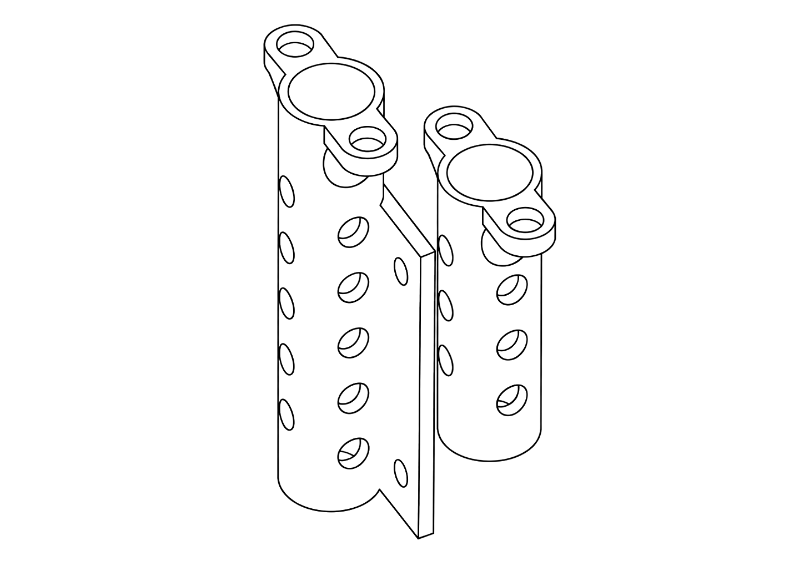

My Parametric 3D Models
A collection of parametric 3D models I've made with Replicad for personal projects. All of them are created from code and they are open source. Feel free to use and edit them in any way you like.
Around the house


Drawing holder

Simple holder I designed to put and photograph my pen plotted drawings.


Fun
Plotter
Isograph ink reservoir

When pen-plotting, the default isograph ink reservoir feels small and for larger plots it needs to be refilled.
Spring loaded pen holder

Spring loaded pen holder for an old plotter in a local hacker space.
Axidraw Pen Holder (SCAD)

Pigma Micron holder for the Axidraw plotter. The only SCAD model and therefore not editable in the browser.